Estudio de iluminación
Auditorio
Dos tarimas simétricas junto a las escaleras del escenario, frente a las pantallas laterales.
Comparar montaje
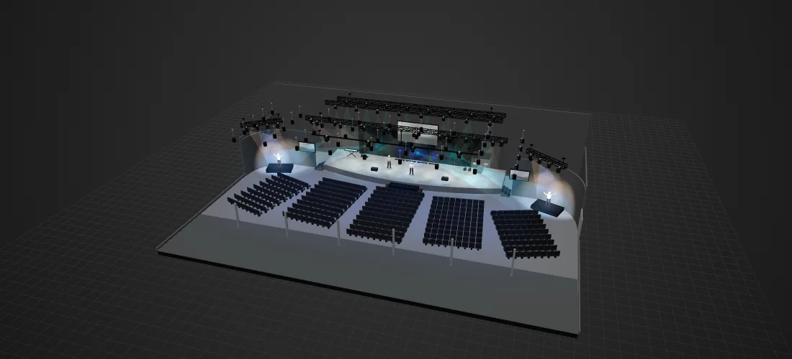
Perspectiva
Escena
Ver el P2 izquierdo en Lightkey
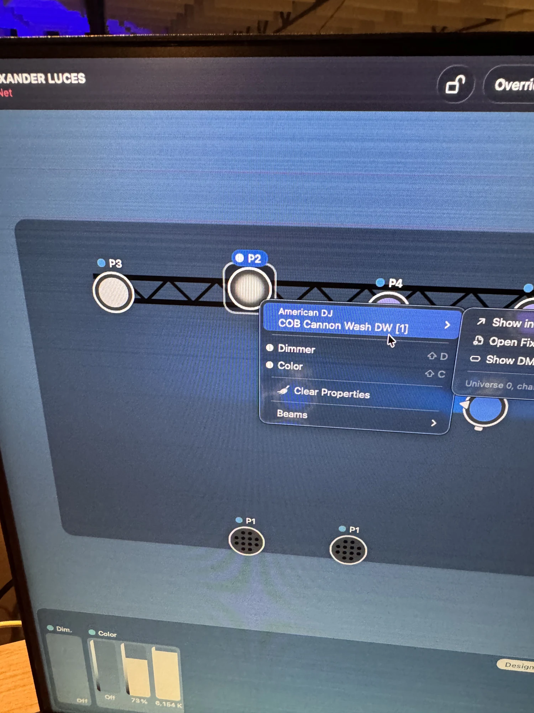
Ver comparación lado a lado
Ajustar luminarias
Las fotos sitúan las dos tarimas junto a las escaleras y pantallas laterales. Las distancias y alturas de la maqueta son orientativas. Comparar con las fotos
Luz de sala
Cobertura en butacas
El objetivo es alcanzar 150 lux en cada butaca y en los pasillos del público. Compara las distribuciones y cambia la altura para ver dónde llega esa luz.
Distribución de colgantes
Debajo del entrepiso. El mapa supone un trayecto libre entre cada colgante y las butacas. Al fondo, el entrepiso intercepta la luz del techo y hay empotrados propios. Para conocer la cobertura real de esa zona faltan la profundidad del voladizo, la altura libre y mediciones de lux. Ver foto del fondo
Cómo se calcula
Se suma la luz directa de cada FUZE Pendant Compact en blanco a 3.200 K y al 100 %, con su lente de 45° y un factor de mantenimiento de 0,80. La retícula de 5 cm incluye las filas y los pasillos del croquis. Las escenas de color del visor son ilustrativas.
Con esta altura, un colgante tiene una huella de de diámetro y m² al 50 % de intensidad. El mapa incluye la luz que se superpone entre equipos.
La escala del croquis y la altura del recinto son supuestas. Las medidas del salón, las obstrucciones y las lecturas con luxómetro permitirán confirmar la cobertura. Ver cálculo en el informe técnico
Fotos y parche DMX


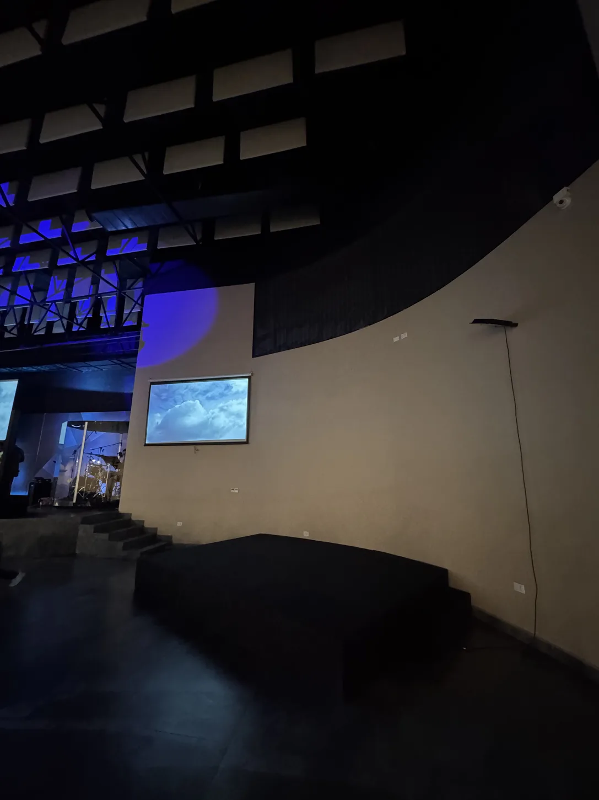

Ver las otras cuatro fotos del recinto

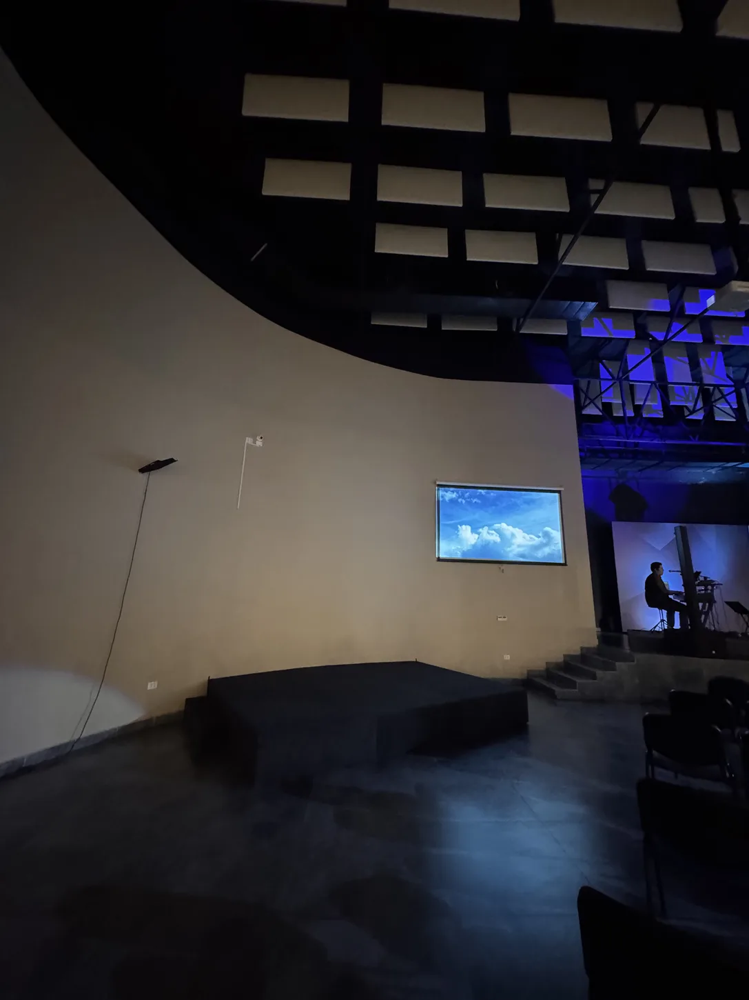

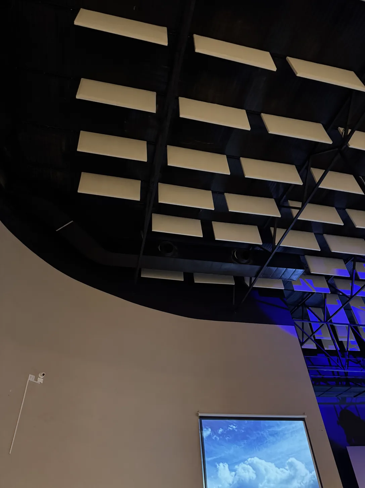

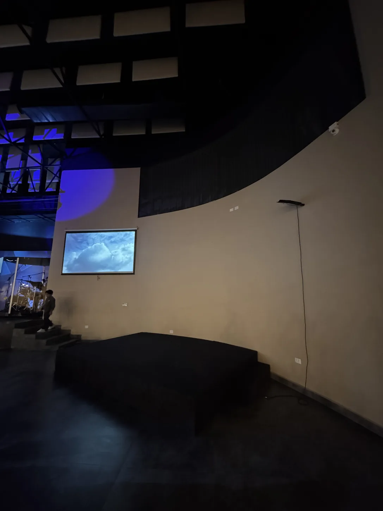

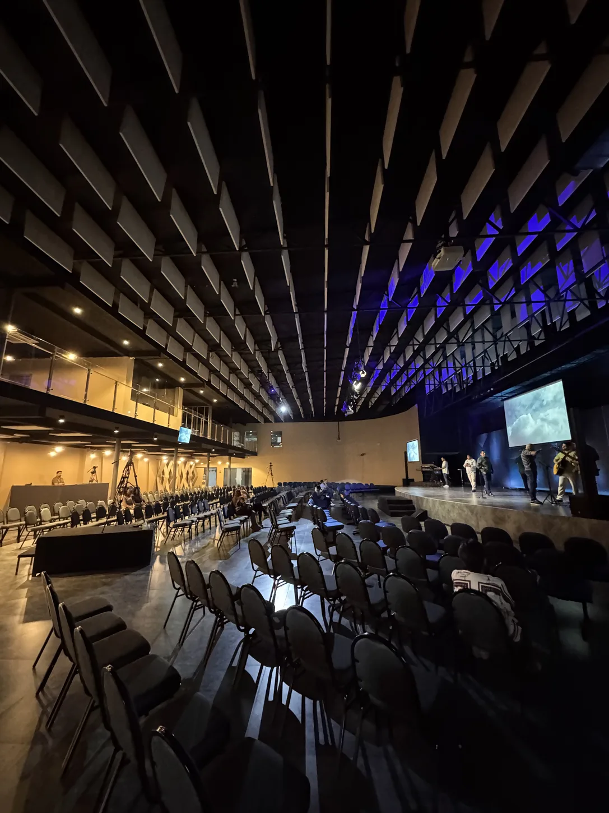
Qué luces usar y qué añadir más adelante
Danza · 6 luces funcionales. En cada tarima, dos perfiles LED fijos dan luz principal y relleno cruzado a las caras. Sus cuchillas limitan el haz cerca de la pantalla y los escalones. Un Fresnel blanco alto, detrás y hacia el lado del escenario, dibuja hombros y brazos en los giros. Usa las viseras para contener el derrame. En la escena Danza, alterna Contraluz de danza para comparar. Ángulos escénicos según ETC
Escenario y público · 23 luces funcionales propuestas. Tres Fresnel superiores complementan los ocho frontales existentes y tres PAR posteriores separan banda y voces del banner. Los 17 colgantes regulables sirven para lectura en blanco y ambiente en color. Medir aparte el sector bajo el entrepiso.
Color y movimiento · equipos existentes. Las barras lineales y cuatro PAR de piso colorean el banner. Los cuatro móviles MH4–MH7 de la segunda barra sirven para acentos en una canción o alabanza. Guardar posiciones de danza y muros en Lightkey y cambiar de posición con el dimmer cerrado. Para la prédica, mantener fijos los rostros y bajar el fondo hasta que el texto de las pantallas se lea desde las butacas. Control de posición en Lightkey
Ampliación por necesidad. Si la cámara pierde las caras al salir del púlpito, añadir 2 perfiles blancos regulables para posiciones de palabra. Si la alabanza alterna con frecuencia entre banda y danza y los móviles actuales dan un haz demasiado estrecho, probar 2 cabezas móviles de baño con zoom en los laterales posteriores. Para color arquitectónico, ensayar 2 bañadores asimétricos sobre paños libres de pantallas. Estas seis unidades opcionales se evalúan por separado de las 29 propuestas.

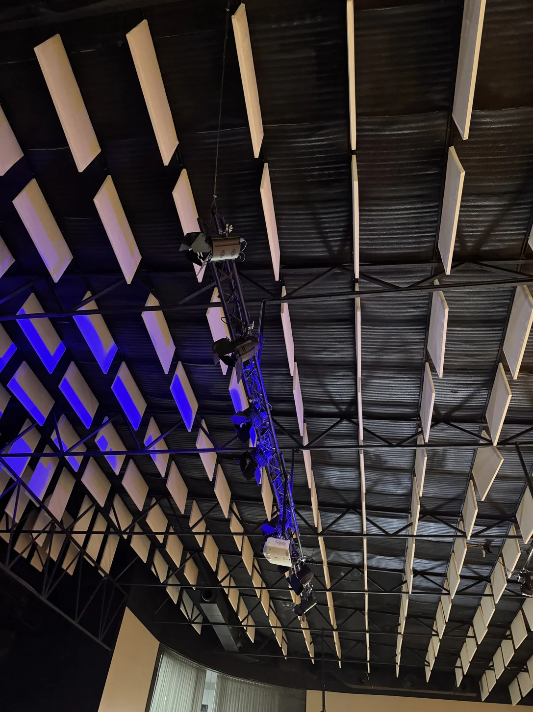

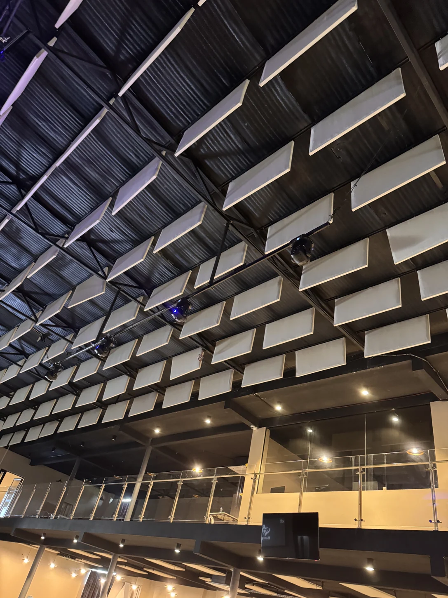

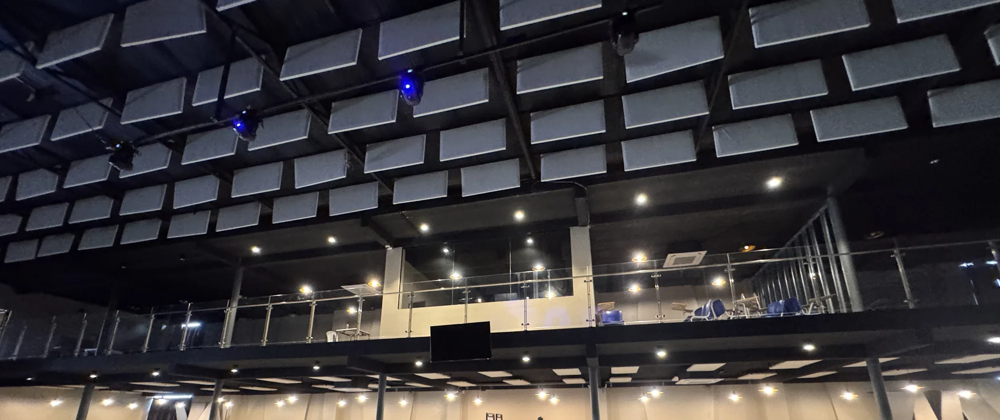
Ver las 16 luminarias identificadas en Lightkey
Desde las butacas, la barra frontal sigue el orden P3 · P2 · P4 · P4 · P4 · P4 · P2 · P3. En la segunda barra, MH4 a MH7 van de izquierda a derecha. Los cuatro P1 están en el piso del escenario, dos a cada lado, dirigidos hacia el banner.
| Etiqueta | Cant. | Perfil en Lightkey | Canales DMX |
|---|---|---|---|
| P1 | 4 | Chauvet SlimPAR Q12BT | 010–017 |
| P2 | 2 | American DJ COB Cannon Wash DW | 235–238 |
| P3 | 2 | Chauvet EVE F-50Z | 257–259 |
| P4 | 4 | U’King LED PAR Light 7 4in1 | 225–232 |
| MH4–MH7 | 4 | Generic Spot Beam ST | 265–282 · 285–302 · 305–322 · 325–342 |
Lightkey muestra un bloque compartido por cada grupo P y un bloque por cada móvil. El perfil genérico de los móviles permite identificar sus canales. La marca y el modelo físico se confirman en la etiqueta del equipo.

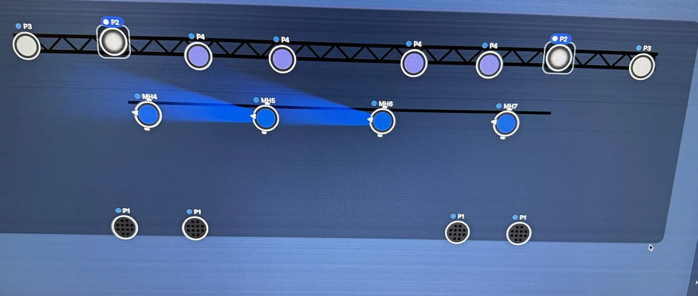

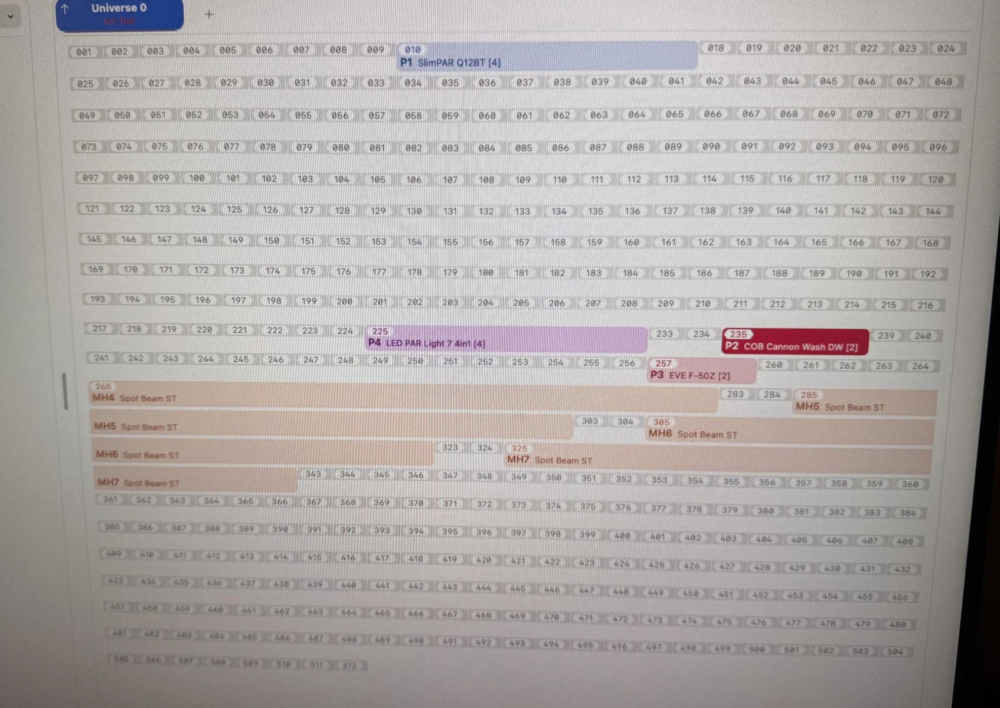
Documentación
Informes
Montaje, tipos de luz, diagramas y cobertura de sala.
Referencia histórica para seis colgantes y el montaje anterior de danza. Los dos soportes posteriores requieren cotización.
Planta actualizada, cantidades y criterio de uso en una página.